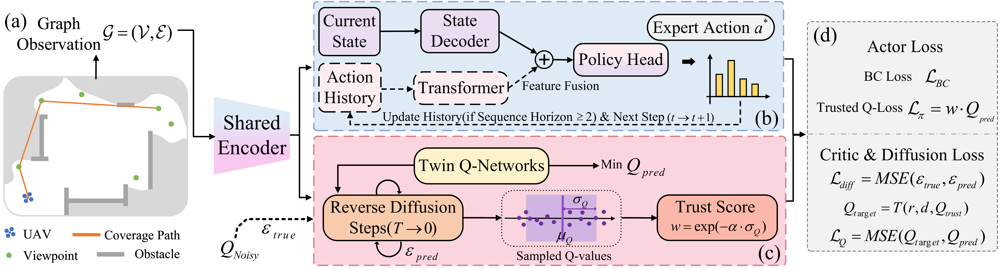

Topological Planning
Representing large scenes as sparse graphs for long-horizon robotic reasoning.

About
I am affiliated with Sun Yat-sen University and focus on reinforcement learning, topological representations, and embodied planning. My work studies how robots can reason over compact graph structures, select informative viewpoints, and transfer learned policies to complex real-world environments.
Focus
Representing large scenes as sparse graphs for long-horizon robotic reasoning.
Learning viewpoint and exploration policies from data without expensive online interaction.
Coupling robot motion with high-fidelity mapping and scene reconstruction.
First-author Work
DST-Planner combines 3D skeleton graphs, sequential topological decision-making, and diffusion-augmented offline RL to improve autonomous exploration in complex environments.
View on Scholar
This work builds a graph-based active scene reconstruction framework that integrates 3D skeleton topology, BEV-augmented graph inference, and offline RL for robust viewpoint selection.
Google Scholar profile
Other Work
Zhi Li, Kairao Zheng, Yiqing Yuan, Junlong Huang, Xupeng Zhang, Jianping Wu, Hui Cheng
Kairao Zheng, Zhi Li, Yiqing Yuan, Hui Cheng
Contact